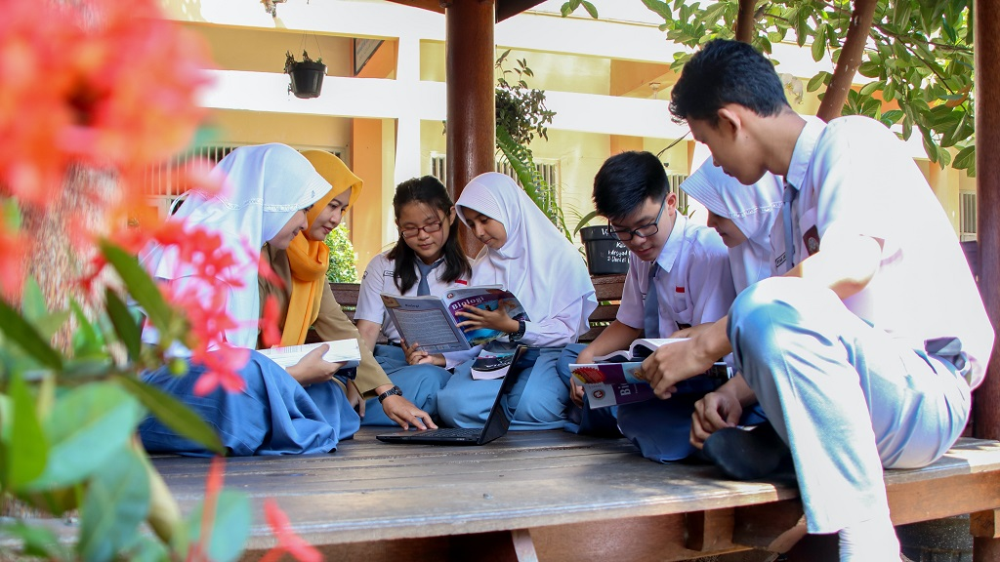

Ilmu dan Masyarakat
Ilmu dan masyarakat memiliki hubungan yang kompleks dan saling memengaruhi. Ilmu, sebagai upaya sistematis untuk memahami dunia melalui observasi, penelitian, dan analisis rasional, tidak hanya membentuk fondasi pengetahuan, tetapi juga memberikan dampak mendalam pada struktur dan dinamika masyarakat. Ilmu memberikan kontribusi positif terhadap kemajuan masyarakat melalui inovasi teknologi, peningkatan kesejahteraan, dan pemecahan masalah yang dihadapi oleh manusia. Penemuan-penemuan ilmiah, seperti vaksin, teknologi komunikasi, dan sumber energi terbarukan, telah membentuk wajah masyarakat modern dan meningkatkan kualitas hidup banyak orang.
Pendidikan ilmiah yang baik tidak hanya membekali individu dengan pengetahuan teknis tetapi juga melatih mereka untuk berpikir kritis, menganalisis informasi, dan berpartisipasi aktif dalam masyarakat. Pendidikan ilmiah yang inklusif dan merata dapat menjadi alat untuk mengurangi kesenjangan pengetahuan di masyarakat.
Ilmu pengetahuan juga memiliki peran penting dalam membentuk sikap dan pandangan masyarakat terhadap isu-isu kontemporer. Penggunaan ilmu pengetahuan dalam memahami perubahan iklim, kesehatan global, dan tantangan sosial lainnya dapat membantu membentuk sikap yang berbasis pada bukti dan solusi yang efektif.
Ilmu pengetahuan bukan hanya tentang mengumpulkan fakta dan data tetapi juga tentang bagaimana pengetahuan tersebut dapat diintegrasikan ke dalam masyarakat untuk mencapai kemajuan yang berkelanjutan. Oleh karena itu, penting untuk memperkuat hubungan antara ilmu pengetahuan dan masyarakat, mempromosikan pendidikan ilmiah yang inklusif, dan memastikan bahwa kemajuan ilmu pengetahuan berkontribusi positif bagi keberlanjutan dan kesejahteraan masyarakat secara keseluruhan.